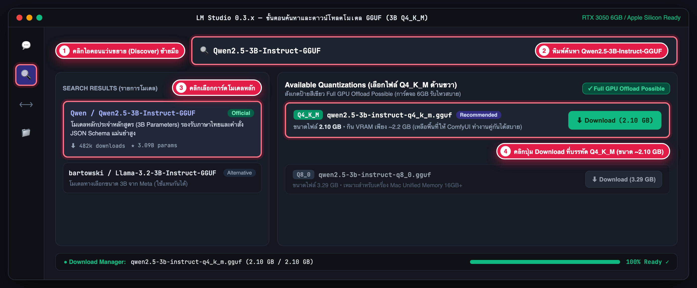
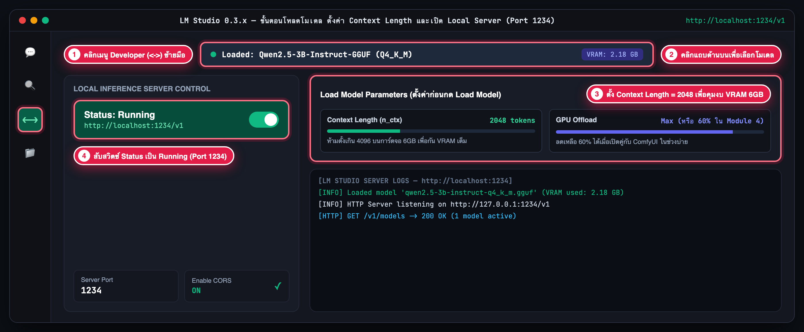
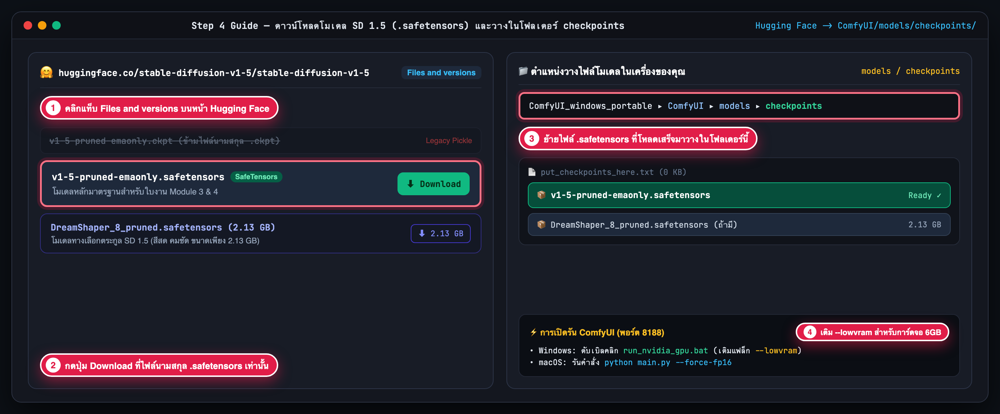
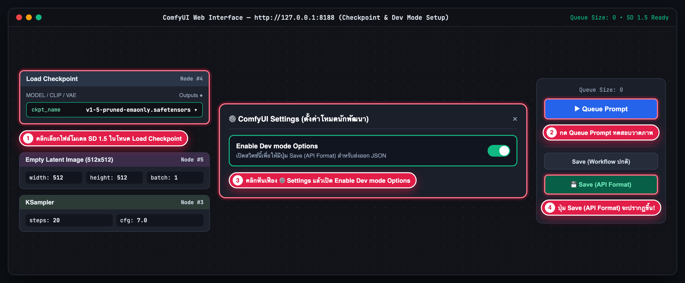
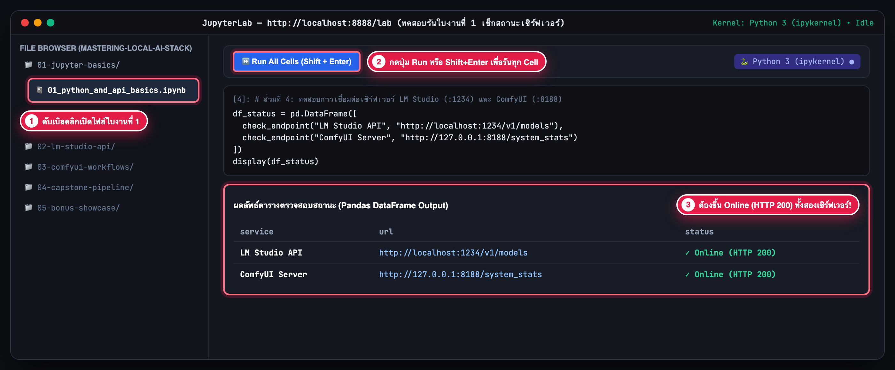

1. การเตรียม Python (3.10 ถึง 3.12) และ Git
ติดตั้งโปรแกรมพื้นฐานสำหรับรัน JupyterLab และดึงไฟล์ใบงานจาก GitHub Repository
สำหรับ Windows 11 (เครื่องห้องแล็บ): ติดตั้งผ่านคำสั่ง winget ใน PowerShell ได้เลย หรือดาวน์โหลดตัวติดตั้งจากเว็บ python.org (ตอนติดตั้งอย่าลืมติ๊กถูกที่ช่อง Add python.exe to PATH)
winget install -e --id Python.Python.3.11
winget install -e --id Git.Git
# ปิดและเปิด PowerShell ใหม่ จากนั้นตรวจสอบเวอร์ชัน
python --version
git --version
สำหรับ macOS (Apple Silicon): แนะนำให้ติดตั้งผ่าน Homebrew เพื่อให้ได้ Python 3.11 และ Git ที่ทำงานบนชิปตระกูล M-series (arm64) ได้โดยตรง
brew install python@3.11 git
# ตรวจสอบเวอร์ชันหลังติดตั้งเสร็จ
python3 --version
git --version
2. การ Clone Repo, สร้าง Virtual Environment (.venv) และเปิด JupyterLab
สร้างสภาพแวดล้อม Python แยกสำหรับโปรเจกต์นี้ แล้วติดตั้งไลบรารีจากไฟล์ requirements.txt
git clone https://github.com/Dhanabhon/mastering-local-ai-stack.git
cd mastering-local-ai-stack
# สร้างและเปิดใช้งาน Virtual Environment บน Windows
python -m venv .venv
.venv\Scripts\activate
# ติดตั้งไลบรารีทั้งหมดและเปิด JupyterLab
pip install --upgrade pip
pip install -r requirements.txt
jupyter lab
วิธีแก้ปัญหาบน Windows PowerShell: หากขึ้นข้อความแจ้งเตือน "running scripts is disabled on this system" ตอนสั่ง .venv\Scripts\activate ให้รันคำสั่งด้านล่างนี้ก่อน 1 ครั้ง:
Set-ExecutionPolicy -ExecutionPolicy RemoteSigned -Scope CurrentUsergit clone https://github.com/Dhanabhon/mastering-local-ai-stack.git
cd mastering-local-ai-stack
# สร้างและเปิดใช้งาน Virtual Environment บน macOS
python3 -m venv .venv
source .venv/bin/activate
# ติดตั้งไลบรารีทั้งหมดและเปิด JupyterLab
pip install --upgrade pip
pip install -r requirements.txt
jupyter lab3. การติดตั้ง ดาวน์โหลดโมเดลหลัก และตั้งค่า LM Studio (Local LLM Server)
ดาวน์โหลดโมเดลขนาด 3B Parameters (Q4_K_M) และเปิด Local OpenAI-Compatible API Server ที่พอร์ต 1234 (http://localhost:1234/v1)
การดาวน์โหลดโปรแกรมสำหรับ Windows (RTX 3050 6GB): ดาวน์โหลดตัวติดตั้ง LM Studio for Windows (x64) จาก https://lmstudio.ai โปรแกรมจะตรวจจับการ์ดจอ NVIDIA และเปิดใช้งาน CUDA 12 ให้โดยอัตโนมัติ
การดาวน์โหลดโปรแกรมสำหรับ macOS (Apple Silicon M1/M2/M3/M4): ดาวน์โหลด LM Studio for Mac (Apple Silicon) จาก https://lmstudio.ai ซึ่งรองรับ Apple Metal / Unified Memory โดยตรง
ขั้นตอนที่ 3.1 — วิธีค้นหาและดาวน์โหลดโมเดลหลัก Qwen2.5-3B-Instruct-GGUF ในหน้า UI
ขนาดไฟล์ ~2.10 GB (VRAM Safe)
- คลิกเมนู Discover (ไอคอนแว่นขยาย 🔍 ด้านซ้ายมือ): เมื่อเปิดโปรแกรม LM Studio ขึ้นมา ให้ดูแถบไอคอนแนวตั้งซ้ายสุด แล้วคลิกที่ไอคอนรูปแว่นขยาย (หมายเลข ① ในภาพ)
-
พิมพ์ชื่อโมเดลในช่องค้นหา (หมายเลข ②): พิมพ์คำว่า
Qwen2.5-3B-Instruct-GGUF(หรือหากต้องการใช้โมเดลทางเลือกให้พิมพ์Llama-3.2-3B-Instruct-GGUF) -
คลิกเลือกการ์ดโมเดลหลักในคอลัมน์ซ้าย (หมายเลข ③): คลิกที่รายการ
Qwen / Qwen2.5-3B-Instruct-GGUFเพื่อให้รายการไฟล์ย่อย (Available Quantizations) แสดงขึ้นมาทางด้านขวา -
เลือกไฟล์ระดับ
Q4_K_Mแล้วกดปุ่ม Download (หมายเลข ④): ในคอลัมน์ขวา มองหาไฟล์ชื่อqwen2.5-3b-instruct-q4_k_m.gguf(ขนาดประมาณ 2.10 GB ซึ่งจะมีป้ายสีเขียว "Full GPU Offload Possible") แล้วกดปุ่ม Download สีเขียว จากนั้นรอจนแถบสถานะด้านล่างสุดขึ้น100% Completed

qwen2.5-3b-instruct-q4_k_m.gguf
C:\Users\<ชื่อผู้ใช้>\.lmstudio\models\Qwen\Qwen2.5-3B-Instruct-GGUF\ (Windows) หรือ ~/.lmstudio/models/Qwen/Qwen2.5-3B-Instruct-GGUF/ (macOS)
ขั้นตอนที่ 3.2 — วิธีโหลดโมเดล ตั้งค่า Context Length = 2048 และเปิด Local Server (พอร์ต 1234)
OpenAI-Compatible API (:1234)
-
คลิกเมนู Developer (ไอคอน
<->ด้านซ้ายมือ — หมายเลข ①): เปลี่ยนจากหน้าดาวน์โหลดมาที่หน้าควบคุมเซิร์ฟเวอร์นักพัฒนา -
คลิกแถบเลือกโมเดลด้านบนสุด (หมายเลข ②): คลิกปุ่ม "Select a model to load" แถบยาวด้านบน แล้วเลือกโมเดล
Qwen2.5-3B-Instruct-GGUF (Q4_K_M)ที่เพิ่งดาวน์โหลดเสร็จ -
ตั้งค่าพารามิเตอร์ก่อนโหลดโมเดล (หมายเลข ③ — สำคัญมากสำหรับ RTX 3050 6GB):
กำหนดค่า
Context Length (n_ctx) = 2048(ห้ามตั้งเกิน 4096 เพื่อไม่ให้ KV Cache แย่ง VRAM ของ ComfyUI) และตั้งค่าGPU Offload = Max(หรือลดเหลือ60%ในช่วงบ่าย Module 4 ที่เปิดคู่กับ ComfyUI) แล้วกดปุ่ม Load Model -
สับสวิตช์เปิดเซิร์ฟเวอร์เป็น
Status: Running(หมายเลข ④): สับสวิตช์ด้านซ้ายให้เป็นสีเขียว ตรวจสอบว่าServer Port = 1234และเปิดEnable CORS = ON

) ตั้งค่า Context Length = 2048 และเปิด Local Server ที่พอร์ต 1234" /><->) เมื่อโหลดโมเดลเสร็จและเปิดสวิตช์ Status: Running ที่พอร์ต 1234
| รายการตั้งค่า | ค่าที่แนะนำในห้องอบรม | เหตุผลทางเทคนิค |
|---|---|---|
| 1. โมเดลหลัก (3B) | Qwen2.5-3B-Instruct-GGUF |
เลือกไฟล์ระดับ Q4_K_M หรือ Q8_0 (หรือใช้ Llama-3.2-3B-Instruct-GGUF) ใช้พื้นที่ VRAM ประมาณ 2.2 GB
|
| 2. Context Length | 2048 ถึง 4096 Tokens | ไม่ควรตั้งเกิน 4096 บนการ์ดจอ 6GB เพื่อกันพื้นที่ VRAM สำหรับ KV Cache ไว้ให้ ComfyUI ในช่วงบ่าย |
| 3. GPU Offload | Max (Module 2) / 60% (Module 4) | ตอนรันคู่กับ ComfyUI บน RTX 3050 6GB ในช่วง Capstone สามารถลด GPU Offload ลงเหลือ 50% ถึง 70% เพื่อแบ่งงานให้ซีพียู Intel Core Ultra 7 265 |
curl http://localhost:1234/v1/models4. การติดตั้ง ComfyUI, ดาวน์โหลดโมเดล SD 1.5 และตั้งค่าโหมดนักพัฒนา
ติดตั้งโปรแกรม ComfyUI และนำโมเดลตระกูล Stable Diffusion 1.5 (SD 1.5) นามสกุล .safetensors ไปวางในโฟลเดอร์ models/checkpoints/ เพื่อให้เรนเดอร์ภาพ 512x512 เสร็จภายใน 2 ถึง 3 วินาทีบนการ์ดจอ 6GB
ขั้นตอนที่ 4.1: ดาวน์โหลดและติดตั้งตัวโปรแกรม ComfyUI
พอร์ตเริ่มต้น 8188สำหรับ Windows (NVIDIA RTX 3050 6GB แนะนำรุ่น Windows Portable): รุ่น Portable มาพร้อม Python และ CUDA ในตัว ไม่ต้องกดติดตั้งลงระบบและไม่ต้องใช้สิทธิ์ Admin
- เข้าไปที่หน้า ComfyUI GitHub Releases (Latest) ↗ แล้วเลื่อนลงมาที่หัวข้อ Assets ด้านล่างสุดของหน้า
-
คลิกดาวน์โหลดไฟล์ชื่อ
ComfyUI_windows_portable_nvidia.7z(ขนาดประมาณ 1.5 ถึง 1.8 GB) -
คลิกขวาที่ไฟล์แล้วแตกไฟล์ด้วยโปรแกรม 7-Zip ไปไว้ในไดรฟ์ที่มีพื้นที่ว่างอย่างน้อย 10 GB (เช่น
C:\AI\ComfyUI_windows_portable\หรือD:\ComfyUI_windows_portable\) -
ภายในโฟลเดอร์ที่แตกออกมาจะพบไฟล์
run_nvidia_gpu.batสำหรับดับเบิลคลิกเปิดโปรแกรม และโฟลเดอร์ComfyUI\models\checkpoints\สำหรับวางไฟล์โมเดลในขั้นตอนถัดไป
สำหรับ macOS (Apple Silicon M1 / M2 / M3 / M4): แนะนำให้ติดตั้งผ่าน Git และ Python Virtual Environment เพื่อให้โปรแกรมรันบน Apple Metal (MPS) ที่พอร์ต 8188 ตรงกับโค้ดในใบงานทุกบททันที
- เปิดโปรแกรม Terminal แล้วรันคำสั่งด้านล่างทีละบรรทัดเพื่อโคลนโปรเจกต์ ComfyUI และติดตั้งไลบรารี PyTorch สำหรับชิปตระกูล M:
# 1. โคลนซอร์สโค้ด ComfyUI ลงในเครื่อง
git clone https://github.com/comfyanonymous/ComfyUI.git
cd ComfyUI
# 2. สร้างและเปิดใช้งาน Virtual Environment สำหรับ ComfyUI
python3 -m venv .venv
source .venv/bin/activate
# 3. ติดตั้ง PyTorch (รองรับ Apple Silicon MPS) และไลบรารีที่จำเป็น
pip install --upgrade pip
pip install torch torchvision torchaudio
pip install -r requirements.txtขั้นตอนที่ 4.2: ดาวน์โหลดโมเดลหลัก SD 1.5 จากที่ไหน และนำไปวางไว้ที่โฟลเดอร์ใด?
นามสกุล .safetensors เท่านั้นv1-5-pruned-emaonly.safetensors
โมเดลต้นฉบับ Stable Diffusion 1.5 ที่ตรงกับชื่อในไฟล์เวิร์กโฟลว์ sd15_txt2img_api.json ทุกประการ
DreamShaper_8_pruned.safetensors
โมเดล Fine-tuned ตระกูล SD 1.5 ยอดนิยมที่ให้ภาพสีสดและแสงเงาสวยงามตั้งแต่รอบแรก (ขนาดเพียง 2.13 GB)
- เข้าแท็บ Files and versions บน Hugging Face (หมายเลข ①): เมื่อคลิกลิงก์ด้านบน ให้สังเกตรายชื่อไฟล์ในคลัง
-
กดดาวน์โหลดเฉพาะไฟล์นามสกุล
.safetensors(หมายเลข ②): คลิกปุ่ม Download ข้างไฟล์v1-5-pruned-emaonly.safetensors(ข้อควรระวัง: ข้ามไฟล์นามสกุล.ckptเพราะเป็นฟอร์แมตเก่า) -
ย้ายไฟล์ไปวางในโฟลเดอร์
models/checkpoints/(หมายเลข ③):- Windows: วางไฟล์ไว้ที่
ComfyUI_windows_portable\ComfyUI\models\checkpoints\ - macOS: วางไฟล์ไว้ที่
ComfyUI/models/checkpoints/
- Windows: วางไฟล์ไว้ที่
-
การเปิดรันเซิร์ฟเวอร์ ComfyUI ที่พอร์ต
8188(หมายเลข ④): สำหรับการ์ดจอห้องแล็บ RTX 3050 6GB แนะนำให้เติมแฟล็ก--lowvramในไฟล์run_nvidia_gpu.batตามตัวอย่างด้านล่าง

.safetensors บน Hugging Face และพาธโฟลเดอร์ ComfyUI/models/checkpoints/
.\python_embeded\python.exe -s ComfyUI\main.py --windows-standalone-build --lowvram
pause# เข้าไปยังโฟลเดอร์ ComfyUI และรันเซิร์ฟเวอร์ที่พอร์ต 8188
python main.py --force-fp16
ขั้นตอนที่ 4.3: วิธีเลือกโมเดลในหน้าเว็บ ComfyUI (http://127.0.0.1:8188) และเปิดโหมด API
Enable Dev mode Options
-
ตรวจสอบโหนด
Load Checkpoint(หมายเลข ①): เมื่อเปิดเบราว์เซอร์ไปที่http://127.0.0.1:8188ให้คลิกที่ช่องckpt_nameในกล่องโหนด Load Checkpoint แล้วเลือกไฟล์v1-5-pruned-emaonly.safetensors(หากเพิ่งวางไฟล์ขณะเปิดโปรแกรมอยู่ ให้กดปุ่มRบนคีย์บอร์ดเพื่อ Refresh รายชื่อโมเดล) -
กดปุ่ม
Queue Promptเพื่อทดสอบวาดภาพแรก (หมายเลข ②): ตรวจสอบว่าการ์ดจอสามารถเรนเดอร์ภาพ512x512ออกมาได้ภายใน 2–3 วินาทีโดยไม่มีข้อความแจ้งเตือนสีแดง -
คลิกไอคอนฟันเฟือง ⚙️ Settings แล้วเปิด
Enable Dev mode Options(หมายเลข ③): เปิดหน้าต่างตั้งค่าของ ComfyUI แล้วสับสวิตช์ Enable Dev mode Options ให้เป็นสีเขียว -
สังเกตปุ่ม
Save (API Format)ที่ปรากฏขึ้นมา (หมายเลข ④): ปุ่มนี้จะใช้ในช่วงบ่าย (Module 3 และ 4) สำหรับส่งออกกราฟโหนดเป็นไฟล์ JSON ให้โค้ด Python สั่งรันอัตโนมัติ

http://127.0.0.1:8188) แสดงตำแหน่งเลือกโมเดลและการเปิดปุ่ม Save (API Format)
เนื้อหาเสริม: ต้องติดตั้ง ComfyUI Desktop หรือไม่? (และวิธีตั้งค่าหากมีติดตั้งอยู่ในเครื่องแล้ว)
สรุปสั้นๆ: ไม่จำเป็นต้องใช้ ComfyUI Desktop ในการอบรมนี้ เพราะใบงานทั้งหมดออกแบบให้ใช้รุ่น Windows Portable (.7z) หรือ macOS CLI (python main.py) เป็นหลัก ซึ่งไม่ต้องติดตั้งลงระบบและใช้พอร์ต 8188 ตรงกับโค้ดในห้องเรียนทันที แต่หากคุณติดตั้งแอป ComfyUI Desktop (ตัวติดตั้ง .exe หรือ .dmg) ไว้ในเครื่องอยู่แล้ว สามารถใช้เรียนต่อได้โดยไม่ต้องลบลงใหม่ เพียงปรับตั้งค่าตามตารางด้านล่าง
| หัวข้อที่แตกต่างกัน | ComfyUI Portable / CLI (มาตรฐานในคลาส) | ComfyUI Desktop App (ตัวเลือกเสริม) |
|---|---|---|
| 1. หมายเลข Port เริ่มต้น (สำคัญที่สุด) |
พอร์ต 8188 (http://127.0.0.1:8188) ตรงกับโค้ดในใบงานทุกบททันที
|
มักตั้งค่าเริ่มต้นเป็นพอร์ต 8000 (http://127.0.0.1:8000) หากไม่เปลี่ยนพอร์ต โค้ดเช็กสถานะในใบงานที่ 1 จะแจ้งว่า Offline
|
2. โฟลเดอร์สำหรับวางไฟล์โมเดล .safetensors
|
อยู่ในโฟลเดอร์โปรแกรมโดยตรงที่ ComfyUI/models/checkpoints/
|
แยกไปเก็บในโฟลเดอร์เอกสารของผู้ใช้ เช่น Documents\ComfyUI\models\checkpoints\ (Windows) หรือ ~/Documents/ComfyUI/models/checkpoints/ (macOS)
|
3. การใส่แฟล็กคุม VRAM (--lowvram)
|
เติมท้ายคำสั่งในไฟล์ run_nvidia_gpu.bat ได้โดยตรง
|
ตั้งค่าผ่านเมนู Settings → Server-Config → Extra Arguments |
วิธีที่ 1 (แนะนำ): เปลี่ยนพอร์ตใน ComfyUI Desktop ให้เป็น 8188
- เปิดโปรแกรม ComfyUI Desktop แล้วคลิกไอคอนฟันเฟือง ⚙️ Settings
- เลือกเมนูหมวด Server-Config
- เปลี่ยนช่อง Port จาก
8000เป็น8188 - ปิดและเปิดโปรแกรม ComfyUI Desktop ใหม่ 1 ครั้ง เพื่อให้ใช้โค้ดในใบงานทุกบทได้ทันทีโดยไม่ต้องแก้โค้ด
วิธีที่ 2: ใช้พอร์ต 8000 เดิม แล้วแก้ URL ใน Jupyter Notebook
หากไม่ต้องการเปลี่ยนตั้งค่าในโปรแกรม ComfyUI Desktop ให้แก้เลขพอร์ตของตัวแปรในเซลล์โค้ด Python ของใบงานที่ 1 และใบงานที่ 4 จาก 8188 เป็น 8000 ดังนี้:
COMFYUI_URL = "http://127.0.0.1:8000"5. ทดสอบรันใบงานที่ 1 ใน JupyterLab & Pre-flight Checklist
ตรวจสอบขั้นสุดท้ายว่า JupyterLab สามารถคุยกับทั้ง LM Studio (:1234) และ ComfyUI (:8188) ได้สำเร็จ แล้วติ๊กเช็กลิสต์ด้านล่างให้ครบทั้ง 6 ข้อ
ขั้นตอนที่ 5.1 — วิธีเปิดใบงานที่ 1 ใน JupyterLab เพื่อเช็กสถานะ Online (HTTP 200)
-
เปิดไฟล์ใบงานที่ 1 (หมายเลข ①): ในหน้าต่าง JupyterLab แถบซ้ายมือ ให้ดับเบิลคลิกโฟลเดอร์
01-jupyter-basics/แล้วเปิดไฟล์01_python_and_api_basics.ipynb -
กดรันทุก Cell (หมายเลข ②): คลิกปุ่ม
⏩ Run All Cellsด้านบน (หรือกดShift + Enterไล่ลงมาทีละ Cell) -
ตรวจสอบตารางผลลัพธ์ด้านล่างสุด (หมายเลข ③): หากทั้ง
LM Studio APIและComfyUI Serverแสดงสถานะสีเขียว✓ Online (HTTP 200)แปลว่าเครื่องของคุณพร้อมเข้าเรียน 100%!

01_python_and_api_basics.ipynb